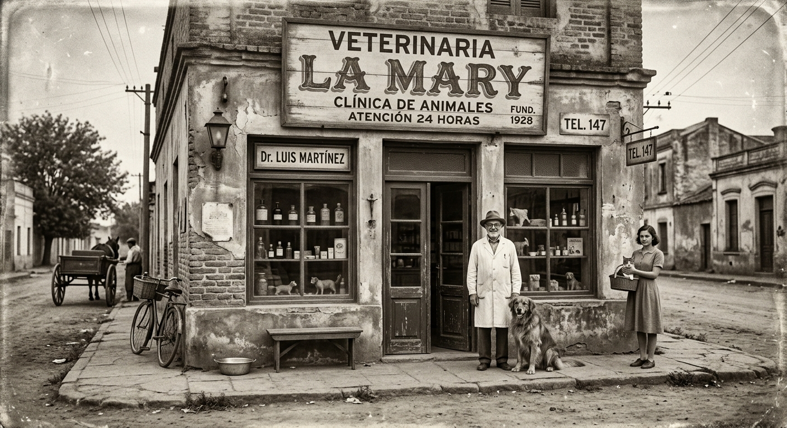

Historia
Veterinaria la Mary nació en 1994 cuando el Dr. Lopez abrió su primera sucursal en Neuquén Capital. Hoy en día Veterinaria la Mary cuenta con 3 sucursales en 2 localidades y más de 10 especialistas en distintas ramas.
Sobre nosotros
Dedicados a cuidar a tus mascotas con precisión y cariño. Somos especialistas en diagnósticos avanzados. Nuestro equipo de veterinarios, con vasta experiencia y formación especializada, está comprometido con la salud y bienestar de los animales. Sabemos que cada caso es único y por ello personalizamos el cuidado de cada paciente, asegurando diagnósticos precisos y tratamientos efectivos. La confianza y satisfacción de nuestros clientes son nuestros mayores logros.
